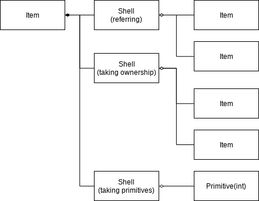

Introduction¶
Background¶
Most programming languages provide their own way to store and fetch data used by software, such as using plain variable or container objects. They are convenient to be used temporary usage such as storing data for scope for functions and objects, but lack at features for long-standing data.
There are some applications requires data managing system for complex, long-standing data which comes with data modification event, tree-like structure, modification undoing and redoing, and ownership and dependency management among data items. To fulfill those requirements, building separate library becomes mandatory.
Introduction¶
Data Module(MD) introduces a library structure to build tree-like data structure which fulfills requirements listed above. It’s library structure, not a concrete library, and different libraries can be built from this structure.
Item and Shell¶
MD provides 2 concepts to form a data tree, Item and Shell. An Item takes dictionary of Shells which uses enumeration or string as key. A Shell takes other Items or primitives in the form of list, set, or map container or just single.
Item Ownership¶
When a Shell takes other Items, it can take them as children with taking ownership, or as referring Items without ownership. Ownership affects the lifetime of its owner Item. An Item can have multiple owners, and if at least one owner exists, the Item is ensured not to be deleted at that moment. Still, it does not mean that an Item with no owner must go to deletion process soon, since there are more factors which affects to the lifetime.
Item Referring¶
Ownership is not the only way to take other Items: there’s one more, taking reference. For an Item, being referred from other Items does not affect to its lifetime, and whenever referring target becomes Expired or Deleted, referring is automatically disconnected.
Item Refer Info¶
If an Item is referred by another Item, regardless whether it’s just simple referring or taking ownership, the referred Item knows which other Items are referring itself. When an Item refers another, it adds Item Refer Info to the referred Item. Item Refer Info has reference of Shell which is containing itself.
Ownership from general C++ instance¶
Ownership from non-Item object is another factor which determines an Item’s
lifetime. If an C++ instances calls Item::ownership() : ItemOwnership,
the Item creates and adds Item Ownership Info to set, and returns
Item Ownership instance, which is not copyable but movable, and calls
Item::freeOwnership(ItemOwnership*) when destructed or
ItemOwnership::free() is called. Item Ownership Info is accessable via
Item Ownership, and owner of Item Ownership instance can send additional
informations by using it.
States of Item¶
There are 3 states for an Item: they are Valid, Expired, and Deleted. Valid state is what its name says: it’s valid, accessable, and modifyable. An Item which is root or owned by at least one Valid Item is Valid. Otherwise, it becomes Expired. An Item Expired can become Valid again unless it goes to Deleted state. Expired item is still alive in physical memory, and in languages which uses physical pointer such as C/C++, Expired item will be stored in the same memory location even if it goes to Valid state.
An Item with Expired state may still have some factors which prevent the Item not to be Deleted due to some reasons, such as it can be Valid if undoing function is invoked. Non-Item Item Lifetime Factor(NIILF) is the term points these factors, and one of them is ownership from general c++ instance.
Root Item¶
An Item can be set as root. If an Item is root,
Item event¶
An Item propagates related events by using callback which takes
const reference of Item Event as parameter.
Item::listen(function) : ItemEventConnection is used to add event listener
and Item::stopListen(ItemEventConnection*) is used to disconnect it.
ItemEventConnection::disconnect() is convenient function which simply
calls Item::stopListen() with this pointer.
Accessing to Shell¶
It’s not intended to use Shell directly for the library users, since
deep understanding of the library and lots of static_cast will be
needed. Use adapter pattern to communicate with Shell in client’s code.
For more detailed informations, read rest of the document.